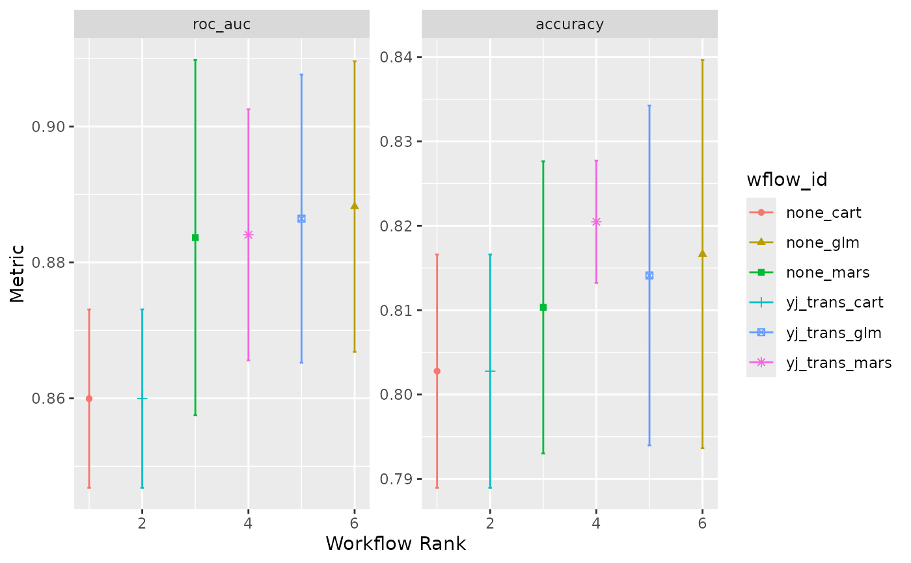

Plot the results of a simple ensemble
Source:R/autoplot_simple_ensemble.R
autoplot.simple_ensemble.RdThis autoplot() method plots performance metrics that have been ranked using
a metric.
Usage
# S3 method for simple_ensemble
autoplot(
object,
rank_metric = NULL,
metric = NULL,
std_errs = stats::qnorm(0.95),
...
)Arguments
- object
A
simple_ensemblewhose elements have results.- rank_metric
A character string for which metric should be used to rank the results. If none is given, the first metric in the metric set is used (after filtering by the
metricoption).- metric
A character vector for which metrics (apart from
rank_metric) to be included in the visualization.- std_errs
The number of standard errors to plot (if the standard error exists).
- ...
Other options to pass to
autoplot(). Currenly unused.
Details
This function is intended to produce a default plot to visualize helpful
information across all possible applications of a simple_ensemble. More
sophisticated plots can be produced using standard ggplot2 code for plotting.
The x-axis is the workflow rank in the set (a value of one being the best)
versus the performance metric(s) on the y-axis. With multiple metrics, there
will be facets for each metric, with the rank_metric first (if any was
provided; otherwise the metric used to create the simple_ensemble will
be used).
If multiple resamples are used, confidence bounds are shown for each result (95% confidence, by default).
Examples
# we use the two_class_example from `workflowsets`
two_class_ens <- simple_ensemble() %>%
add_member(two_class_res, metric = "roc_auc")
#> Loading required package: Formula
#> Loading required package: plotmo
#> Loading required package: plotrix
#>
#> Attaching package: ‘plotrix’
#> The following object is masked from ‘package:scales’:
#>
#> rescale
#> Loading required package: TeachingDemos
autoplot(two_class_ens)
